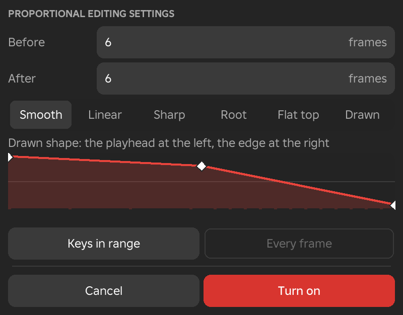
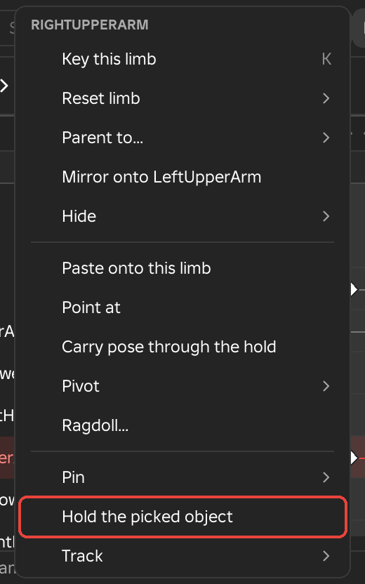
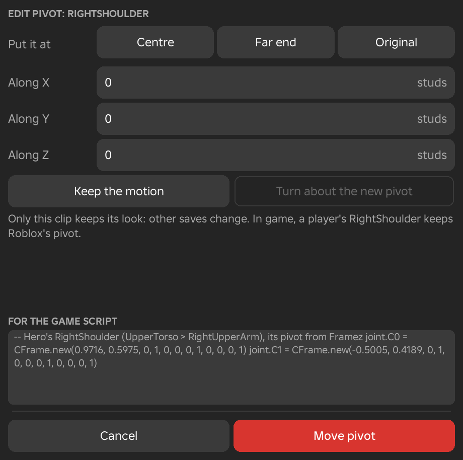

Pose Menu
The Pose menu holds the tools for posing a rig. They cover how the handles behave, the commands for the selected limb, the slider, mirroring, constraints, physics and the generators. It shows in the Animate workspace. While an additive animation layer is selected, the rows that write whole poses (Snap rig to floor, Mirror, Reset pose, Constraints, Physics and Generate) are greyed out.

Rotate and Move
These two rows decide what the handles on a limb do, and the second article describes how to select more than one limb so a single drag poses them all.
Rotate and Move
- Menu
- Pose ‣ Rotate
- Pose ‣ Move
- Shortcut
- R switches between the two
Rotate and Move choose what the handles on the selected limb do. In Rotate the limb shows rings that turn it about its joint, and in Move it shows arrows that slide it along an axis. Only one of the two is on at a time, and R switches between them.
Drag a ring or an arrow to pose the limb. When you let go, the pose is keyed at the playhead if Auto key is on. With Auto key off, the pose stays on screen until you key it with Insert key or move the playhead. Auto key is set in the Preferences window.
Options
- Shift
- Hold it while dragging for slow, fine moves. By default the drag runs at 0.2 times its normal speed.
- Ctrl
- Hold it while dragging to snap turns to 5° steps and moves to 0.1 stud steps.
- Alt
- Hold it while dragging to pass the joint limits and body collision for that one drag.
The speed of Shift and the two Ctrl steps are set under Precision and snapping in the Preferences window.
Example
For example, to raise a guard, select an upper arm in Rotate and drag its ring until the arm lifts. To lower a whole character into a crouch, select the root in Move and drag its vertical arrow down.
See Also
Select Several Limbs
- Shortcut
- Shift+click a limb in the viewport
Selecting more than one limb lets one drag pose all of them. Hold Shift and click a limb to add it to the selection, or click a selected limb again to take it off. The limbs in the selection have an orange outline. A plain click, or Esc, goes back to a single limb.
The handles stay on the limb you selected last. Dragging a ring or an arrow turns or moves every selected limb about its own joint, and the whole drag is one undo step. With World space on, all the selected limbs turn and move the same way in the world.
Options
- IK
- IK makes an arm or leg bend to follow the hand or foot you drag. With several IK hands or feet selected, one drag moves all of them.
- Commands for every selected limb
- Reset limb, Mirror onto, Propagate pose, Pin here, Release here, Delete this pin, Copy world transform, Paste world transform and Apply to the selected limb all act on every limb in the selection, not only the one that carries the handles.
Example
For example, selecting both hands and dragging them together in Move keeps a two-handed grip level while the rest of the pose stays as it is.
Posing
The Posing submenu holds the switches that change how the handles pose the rig, and the tools that act on the whole rig rather than on one limb.
Full-Body IK
- Menu
- Pose ‣ Posing ‣ Full-body IK
With Full-body IK on, a hand or foot that you drag beyond the reach of its own limb pulls the body along. The torso leans, turns and shifts, the hips follow, and the hand or foot reaches from where its shoulder or hip has moved to. The body only moves when the limb cannot reach on its own, and how soon it starts to help is set by Pull.
Planted feet and pinned limbs stay where they are, and free arms ride the torso. When you let go, every part that moved is keyed, as one undo step. Full-body IK works on R6 and R15 rigs and stays on until you switch it off.
Options
The values are set in the Full body section of the Inspector, which appears while Full-body IK is on and a hand, foot, torso or root is selected. They are kept on the rig.
- Pull
- Set on a hand or foot. It controls how soon the body starts to help when that limb is dragged. At 0 the body only helps when the limb is fully straight. The default is 50 % for a hand and 30 % for a foot.
- Stiffness
- Set on the torso or the root. It controls how much that part resists moving, and 100 keeps it completely still. The default is 30 %.
- Hips
- Set on the root. It controls how much the hips resist moving, and 100 keeps them still. The default is 60 %.
- Planted
- Set on the root. It controls how firmly planted feet and held hands stay in place, and a lower value lets them give a little so the body can reach further. The default is 100 %.
Example
For example, dragging a hand down to a low shelf makes the torso lean and the hips drop until the hand arrives, while both feet stay on the floor.
See Also
World Space
- Menu
- Pose ‣ Posing ‣ World space
- Shortcut
- Ctrl+L, or the globe button on the toolbar
With World space on, the rings and arrows line up with the world instead of with the limb. A hand can then be moved straight up or along the ground whatever its tilt. While you move, hold Ctrl for 0.1 stud steps, and turns snap in 5° steps. With several limbs selected, they all move and turn the same way in the world.
Example
For example, to slide a hand along a wall, switch World space on and drag the arrow that points along the wall, even when the forearm is tilted at an angle.
Snap Rig to Floor
- Menu
- Pose ‣ Posing ‣ Snap rig to floor
Snap rig to floor moves the whole rig straight down or up until its lowest point rests on the surface under it. If nothing is underneath, the rig is put on the ground plane at height 0. The message that follows names the object the rig landed on.
Use it after placing a rig in the world, or after a pose has lifted it off the ground. To judge foot contact where the world has no floor, switch on the Floor overlay.
Example
For example, a rig inserted a few studs above a platform drops onto the platform with one click, so its feet match the surface it will stand on in the game.
Place Rig
- Menu
- Pose ‣ Posing ‣ Place rig
Place rig moves or turns the whole rig in the world with Studio's own Move and Rotate tools while the animation is open. It selects the rig's root part and switches to the Move tool; every limb follows the root as it is posed. Choose Place rig again to finish. One Ctrl+Z puts the rig back where it was.
The row is ticked while placing is active, and it is greyed out until an animation is open.
Example
For example, to start a cutscene shot with the character beside a doorway, open the animation, choose Place rig, drag the rig to the doorway and choose Place rig again.
Joint Limits
- Menu
- Pose ‣ Posing ‣ Joint limits
With Joint limits on, each joint stops at its range while you pose, with the rings, the arrows or IK. A drag that goes past the range stops at the edge. Joint limits are on by default. Hold Alt while dragging to pass the limits for that drag.
A joint that already sits outside its range, such as one in an imported animation, is shown as it is, and a drag only moves it back toward the range. The root has no limit, because the body's place is free.
The range of the selected limb is set in the Limits section of the Inspector. Limit this joint switches the limit on or off for that joint. A ball joint has a Swing value, which is how far the limb swings from rest, and Twist min and Twist max. A hinge, such as an R15 elbow or knee, has Bend min and Bend max. Use this pose sets the range so that it reaches the pose as it stands, and Default goes back to the rig's default range. The range is kept on the joint and travels with the rig.
By default R15 elbows and knees bend one way only, and wrists, ankles, the neck and the waist have short ranges. R6 arms twist up to 90° each way and R6 legs swing up to 120°.
Example
For example, with Joint limits on, dragging an R15 forearm backwards past the elbow stops where the elbow ends instead of folding the arm through itself.
See Also
Body Collision
- Menu
- Pose ‣ Posing ‣ Body collision
With Body collision on, a limb stops where it meets the torso or another limb, so a hand cannot be dragged through the chest. Limbs that already touch when the drag starts are left alone. Hold Alt while dragging to pass through for that drag.
Body collision is on by default, and the row is greyed out until Joint limits is on.
Example
For example, when posing a character hugging its own arms, turn Body collision off first, because the forearms are meant to press into the torso.
See Also
Proportional Editing
- Menu
- Pose ‣ Posing ‣ Proportional editing
- Shortcut
- O
With Proportional editing on, a pose change made with the handles also goes into the keys around the playhead. The change applies in full at the playhead and fades to nothing at the edges of a band of frames. The band shows on the events lane while the tool is on.
Only handle drags spread. Pasting, generators and the pose library key without it. One Ctrl+Z undoes the edit and its spread together, and the message afterwards says how many keys the change reached.
Example
For example, if a guard is raised at one frame and the frames around it should rise with it, switch Proportional editing on and pose the one frame. A lean added to a whole stretch of a walk works the same way.
See Also
Proportional Editing Settings
- Menu
- Pose ‣ Posing ‣ Proportional editing settings...
Proportional editing settings... opens the values that shape the band of frames Proportional editing reaches. The dialog's main button reads Turn on while the tool is off and Apply while it is on. Cancel puts back the values you had.

Options
- Before
- How many frames before the playhead the band reaches, from 0 to 600. The default is 6.
- After
- How many frames after the playhead the band reaches, from 0 to 600. The default is 6.
- Shape
- How the change fades toward the edge of the band. Smooth fades along an S-curve, Linear fades at a steady rate, Sharp drops away quickly, Root stays strong until near the edge, and Flat top holds the full change over most of the band before fading. Drawn follows the curve you draw in the dialog. The default is Smooth.
- Drawn shape
- A curve that runs from the playhead at the left to the edge of the band at the right. Drawing on it selects the Drawn shape.
- Keys in range, Every frame
- Which keys change. Keys in range changes only the keys already in the band. Every frame first keys each frame in the band, so the fade is even whatever keys the limb had.
See Also
Squash and Stretch
- Menu
- Pose ‣ Posing ‣ Squash and stretch ‣ Key here
- Pose ‣ Posing ‣ Squash and stretch ‣ Delete key here
- Pose ‣ Posing ‣ Squash and stretch ‣ Open the settings
- Pose ‣ Posing ‣ Squash and stretch ‣ Squash handles
Squash and stretch changes the size of a part, or of the whole body, over time and keys the size. Select a limb, then use the Squash and stretch section of the Inspector or the four rows in this submenu. A size is a factor for each of the part's own axes. A value below 1 squashes the part, and a value above 1 stretches it. Changing a value keys it at the playhead.
A Squash and stretch row appears under the part on the timeline, and the whole body's row is called Whole body squash. Drag its keys to move them, and right-click one for its easing or to delete it. The limb stays joined to the body while its size changes, and the whole body keeps its feet on the floor in any pose.
Options
- Key here
- Keys the size shown at the playhead.
- Delete key here
- Removes the size key at the playhead.
- Open the settings
- Shows the Squash and stretch section in the Inspector.
- Squash handles
- Shows Roblox's own resize handles on the selected part, or on the root for the whole body. Drag a face of the part and it stretches along that axis as you drag. With Keep volume on, the other two sides squash to compensate. Letting go keys the size as one undo step, and Esc or the right mouse button puts it back. Framez's rings and arrows step aside while the handles are on.
In the Inspector section, This part and Whole body choose what the size applies to. Stretch is a single number. A value below 1 squashes the part, and a value above 1 stretches it along its length. Keep volume, on by default, makes the part thinner as it stretches. X, Y and Z set any other shape, from 0.05 to 20 on each axis. Reset here puts the size back to 1 at the playhead, and Delete key removes the key. Save preset keeps a size and its easing under a name, so you can key it again with one click.
Notes
A Roblox animation stores only the position and angle of each joint, so the game needs the FramezEffects script to play squash and stretch. It works on any character, R6 or R15. A mesh bone refuses it, because bones do not scale.
Example
For example, a landing can squash the whole body to 0.8 on the frame of impact and return it to 1 a few frames later, and a punch can stretch the striking arm along its length for one or two frames.
See Also
Selected Limb
The submenu that carries the name of the selected limb holds every command for that limb. It reads This limb and is greyed out until a limb is selected. The same rows open when you right-click a limb in the viewport, or its name in the track list, and the right-click menu adds Insert key from the Key menu at the top.

Reset Limb
- Menu
- Pose ‣ This limb ‣ Reset limb ‣ All
- Pose ‣ This limb ‣ Reset limb ‣ Rotation only
- Pose ‣ This limb ‣ Reset limb ‣ Position only
- Right-click
- A limb in the viewport or the track list
Reset limb puts the selected limb back at its rest pose and keys it at the playhead, so scrubbing does not undo it. With several limbs selected, each one is reset.
Options
- All
- Both the rotation and the position go back to rest.
- Rotation only
- The rotation goes back to rest, and the limb keeps where it has moved.
- Position only
- The position goes back to rest, and the limb keeps how it has turned.
Example
For example, after dragging a hand away from the wrist in Move, Position only brings it back without changing how the wrist is turned.
See Also
IK / FK
- Menu
- Pose ‣ This limb ‣ IK / FK ‣ IK from here
- Pose ‣ This limb ‣ IK / FK ‣ FK from here
- Pose ‣ This limb ‣ IK / FK ‣ Match IK to FK
- Pose ‣ This limb ‣ IK / FK ‣ Match FK to IK
- Right-click
- A limb that has a control ‣ IK / FK
- Needs
- A control rig
The IK / FK submenu is the second row of the limb's menu. It shows for a leg, an arm or a chain on a curve that has a control. It switches the limb between IK and FK from the playhead on, and it matches one side to the other. The Foot, Hand and Curve sections of the Inspector have the same commands.
Options
- IK from here
- The control leads from the playhead on. The control is keyed where the FK limb is first, so nothing moves. The row is greyed, with the reason, when the limb is on IK at the playhead.
- FK from here
- The joints' own keys lead from the playhead on. The joints are keyed to the IK pose first, so nothing moves. The row is greyed, with the reason, when the limb is on FK at the playhead.
- Match IK to FK
- Keys the control at the playhead where the FK limb is. The limb stays on the side it was on.
- Match FK to IK
- Keys the joints at the playhead to the pose the control gives. The limb stays on the side it was on.
Example
For example, a hand on IK rests on a table while the body leans. At the frame it lets go, choose FK from here, and the arm swings freely from that frame with no jump.
See Also
Parent To
- Menu
- Pose ‣ This limb ‣ Parent to...
- Right-click
- A limb, a held object, or the row of a prop or camera
Parent to... makes something ride another part from the playhead on. The child can be a limb, the whole rig (select its root), a held object, a prop or a camera. The parent can be a part of the same rig, a part of another rig, a prop, a camera or any part of the place. The parent's own animation counts, so the child follows it as it moves.
To set a parent, go to the frame where the ride starts, right-click the child and choose Parent to..., then choose the parent from the list. You can also choose Click a part in the view and click any part of a rig, a prop, a camera's body or the place.
Options
- Click a part in the view
- Selects the parent from whatever part you click.
- Its own rig
- Sends the limb back to its own rig. The row is greyed out when the limb is already there.
- This rig
- Lists the holders (Right hand, Left hand, Head, Torso, Right foot and Left foot), and More parts for every other part of the rig. A held object lists its holders instead.
- Other rigs
- Each other rig in the scene is listed by name, with the same holders and More parts.
- Props and cameras
- Lists the props and cameras of the scene.
- World
- Lets go of any parent, so the child stays where it is in the world from this frame.
Each parent switch is either Keep or Snap. Keep leaves the child where it is and remembers its offset from the parent. Snap puts the child on the parent with no offset. A limb eases into a new parent over a number of Blend frames. These values are in the Parent section of the Inspector, which also lists every switch.
On the timeline, the switches show as named blocks in a row under the limb, and the events lane names the ride, for example RightHand on Head. Right-click a switch for Keep where it is, Snap to it, Blend over (0, 2, 4, 8 or 12 frames), Move to the playhead and Delete.
Notes
A part that already follows the thing you are parenting is refused, with the message That part follows the child. A parent that has gone from the place leaves the child where it was and shows in red. Choose the parent again to fix it.
Example
For example, a sword can be passed from one character's hand to another character's hand and carried by it, a hand can rest on a moving car door, and a camera can be fixed to the car it follows.
See Also
Mirror Onto
- Menu
- Pose ‣ This limb ‣ Mirror onto twin
- Right-click
- An arm or leg
Mirror onto puts the selected limb's pose, mirrored, onto its twin on the other side of the body and keys it at the playhead. The row names the twin, for example Mirror onto LeftUpperArm. Only arms and legs have a twin, and for any other limb the row is greyed out.
With several limbs selected, each one goes onto its own twin. If keys are selected on the limb, the mirrored keys land on those frames instead of the playhead.
Example
For example, pose a guard with the right arm, then use Mirror onto to give the left arm the same guard, mirrored, without touching the rest of the body.
See Also
Hide
- Menu
- Pose ‣ This limb ‣ Hide ‣ Hide
- Pose ‣ This limb ‣ Hide ‣ Isolate
- Pose ‣ This limb ‣ Hide ‣ Show all
- Right-click
- A limb ‣ Hide
- Shortcut
- H Hide, Ctrl+H Isolate, Alt+H Show all
Hide hides the selected limb in the viewport, together with anything it carries, such as a hat or a weapon welded to it. Choosing it on a limb that is already hidden shows the limb again. Isolate keeps the selected limb, and the limbs that hang from it, in view and hides every other joint of the rig. Show all brings everything back, and it is greyed out while nothing is hidden.
Hiding changes only what you see. Nothing is keyed, saved or sent to the game. A hidden limb cannot be selected in the viewport, so a hidden torso no longer stands in front of an arm behind it. These are the same rows as in the View menu.
See Also
Paste onto This Limb
- Menu
- Pose ‣ This limb ‣ Paste onto this limb
- Right-click
- A limb in the viewport or the track list
Paste onto this limb puts keys or a pose that you copied onto the selected limb. Copied keys land from the playhead on, each as far after it as it was after the first key copied, and each keeps its easing. When the keys were all copied from one limb, they all land on the selected limb, so keys copied from the left arm can be pasted onto the right arm. When they came from several limbs, only the selected limb's own keys land. A copied pose lands on the limb of the same name.
A key already on a frame the paste lands on is replaced, and one undo step puts it back. Keys that would pass the end of the timeline are refused rather than cut off.
Example
For example, copy the keys of a swinging right arm, select the left arm, move the playhead a few frames later and choose Paste onto this limb to get an arm that swings slightly behind it.
See Also
Aim (Selected Limb)
- Menu
- Pose ‣ This limb ‣ Aim
- Right-click
- A limb in the viewport or the track list
Aim turns the selected limb to face a target. A head turns so that its front faces the target, and any other limb points along its length at it. The target is the part or model selected in the Explorer. With nothing selected there, the target is the place where the camera stands at that moment.
Aim makes an Aim constraint, so its frames, target and influence open in Adjust and stay changeable in the Modifiers window. By default it covers the whole animation. The Aim row in the Constraints submenu makes the same kind of constraint without choosing the camera as the target.
Example
For example, select a character's head and choose Aim to keep eye contact with the camera through a cutscene, or select a hand and an enemy's part to point at it while casting.
See Also
Propagate Pose
- Menu
- Pose ‣ This limb ‣ Propagate pose
- Right-click
- A limb in the viewport or the track list
Propagate pose copies the pose of the selected limb's key at the playhead onto the keys that follow it. By default it takes the run of keys after the playhead that hold the same pose as each other, so a hold changes along with the key in front of it. If you select keys after the playhead on the limb, those keys receive the pose instead.
The limb needs a key at the playhead first. With several limbs selected, each one is carried through.
Example
For example, a guard is held through six frames of keys. After you change the first key, Propagate pose gives the rest of the hold the new pose, so the guard does not snap back to the old one.
Pivot
- Menu
- Pose ‣ This limb ‣ Pivot
- Right-click
- A limb or held object ‣ Pivot
- Shortcut
- Alt+click a spot on the body in the viewport
Pivot chooses the point that the selected limb, object or whole body (the torso) turns about, instead of its joint. The rings move to that point, and dragging a ring turns the limb about it. The joint takes the turn and the slide needed to keep the point still. Planted feet and the head hold as they do for any turn, and letting go of the ring keys the pose.
Pivot changes how a drag turns the limb. It does not change the rig, so the new point is only used while you pose. To move the joint's own pivot, use Edit pivot.
Options
- Joint
- The limb's own joint. This is the normal turn.
- Limb end
- The far end of the limb.
- Left heel, Left toe, Right heel, Right toe
- The heel or toe of either foot.
- Left hand, Right hand
- The end of either hand.
- Weapon tip
- The far end of an object the rig holds. The row is greyed out when the rig holds nothing.
- Floor
- The point on the floor under the body.
- Custom point
- Puts down a red ball. Drag it with Studio's Move tool to choose any point.
Alt+click on the body puts the point where the click lands. Esc, choosing Joint, or selecting another limb goes back to the joint.
Example
For example, choose Left heel to pivot a whole-body turn on the heel of the planted foot, or Custom point to turn a body around a sword stuck in the ground.
See Also
Edit Pivot
- Menu
- Pose ‣ This limb ‣ Pivot ‣ Edit pivot...
- Right-click
- A limb or held object ‣ Pivot ‣ Edit pivot...
Edit pivot... moves the point a part turns about, such as a sword's grip, a door's hinge or a creature's joint. The part does not move at rest, and only the point it turns about changes. This changes the joint itself, so the new pivot is part of the rig and applies in the game too.
The dialog shows the old pivot as a grey dot and the new one as a red dot. You can type the move, use one of the three buttons, or drag the red ball with Studio's Move tool, and the dialog reads the ball back as it moves. One Ctrl+Z puts the pivot back.

Options
- Put it at
- Three buttons that place the new pivot. Centre moves it to the middle of the part, Far end to the far end of the part, and Original back to the pivot the joint had before Framez moved it.
- Along X, Along Y, Along Z
- The move from the current pivot, in studs, along the part's own axes.
- Keep the motion, Turn about the new pivot
- Keep the motion changes the numbers in the keys so that every key looks as it did, and only this animation keeps its look; other saves that key the part change. Turn about the new pivot keeps the numbers in the keys, so every save of the rig turns about the new pivot.
- For the game script
- The new C0 and C1 of the joint as two lines you can copy into a game script. Click the box, press Ctrl+A, then Ctrl+C.
- Move pivot
- Applies the move. If the pivot did not move, the message says it is unchanged.
Notes
A player's own joints, such as Neck, Shoulders and Hips, keep Roblox's pivots in the game, so use Edit pivot on rigs and parts you ship yourself. A locked limb refuses the change, and so does a mesh bone, which turns about its own joint.
Example
For example, a sword that was welded at its centre can have its pivot moved to the grip, so that rotating the sword swings it about the hand instead of about the blade's middle.
Ragdoll (Selected Limb)
- Menu
- Pose ‣ This limb ‣ Ragdoll...
- Right-click
- A limb ‣ Ragdoll...
Ragdoll... on a limb opens the Ragdoll window with the push set to land on that limb. Everything else works as described for the Ragdoll window on the Physics page.
See Also
Pin
- Menu
- Pose ‣ This limb ‣ Pin ‣ Pin here
- Pose ‣ This limb ‣ Pin ‣ Release here
- Pose ‣ This limb ‣ Pin ‣ Pin weight
- Pose ‣ This limb ‣ Pin ‣ Pin blend
- Pose ‣ This limb ‣ Pin ‣ Bake into keys
- Pose ‣ This limb ‣ Pin ‣ Delete this pin
- Pose ‣ This limb ‣ Pin ‣ Delete all pins on this limb
- Right-click
- A limb ‣ Pin, or a pin's bar on the events lane
A pin holds a limb at one place in the world from the playhead on while the body moves. How it holds depends on the limb. A hand or foot is reached by IK, so the arm or leg bends to keep it there. The head or another body part keeps its angle in the world, like a head that stays fixed on one spot. Anything else, such as a prop or a weapon in one hand, is held exactly, in both place and angle.
The yellow ball in the viewport and the bar on the events lane show a pin. The rig always shows the keys blended with the pins, so if you change the body, a pinned foot stays planted. Posing a pinned limb with the handles moves its pin. When you save, the pins are baked into plain keys, and opening the save restores the pins.
Drag a pin's bar on the events lane to change it. Dragging an end moves that end, and dragging the middle moves the whole pin. With several limbs selected, Pin here, Release here and Delete this pin work on every one of them.
Options
- Pin here
- Starts the pin at the playhead. Inside a pin the row reads Move the pin here and moves the pin to where the limb is now. The row is greyed out, with the reason, when the limb cannot be pinned, for example when another limb drives it.
- Release here
- Ends the pin at the playhead, and the keys lead again. It is greyed out when there is no pin at the playhead.
- Pin weight
- Opens the values of the pin at the playhead. IK sets how far toward the pin the limb goes, where 100 % is all IK and 0 % is all keys. Blend in and Blend out are the frames this pin takes to ease in and out, from 0 to 120. It holds chooses Place and angle, Place only or Angle only. Weight over the pin is a curve over the pin's frames. The weight follows makes the weight follow Nothing, The frame, or A joint's turn, and then None at and Full at set the two ends of that range. The main button is Set.
- Pin blend
- How many frames a new pin eases in and out. Choose At once, 2 frames, 4 frames or 8 frames, or type any number from 0 to 120. The default is 4 frames.
- Bake into keys
- Turns the limb's pins into ordinary keys. It is greyed out when the limb has no pin.
- Delete this pin, Delete all pins on this limb
- Delete this pin removes the pin at the playhead, and Delete all pins on this limb removes every pin on the limb.
Example
For example, pin a foot while the hips drop into a crouch and the foot stays planted, or pin a hand to a ledge while the body swings below it, or pin a head to look at one spot while the torso turns.
See Also
Hand on Object
- Menu
- Pose ‣ This limb ‣ Pin ‣ Hand on object
- Pose ‣ This limb ‣ Pin ‣ Other hand on it
- Right-click
- A hand while the rig holds an object, or the held object
These two rows make a two-handed grip. From the playhead the hand stays where it is on the held object, wherever the object goes. Hand on object appears in a hand's Pin list while the rig holds an object. Other hand on it appears in the held object's own Pin list and needs the object to be held in one hand first. Release here ends the grip.
Example
For example, a spear held in one hand can have the other hand placed on its shaft, and the hand then follows the spear through the whole swing. A box can be carried the same way with both hands.
See Also
Hold the Selected Object
- Menu
- Pose ‣ This limb ‣ Hold the selected object
- Right-click
- A limb ‣ Hold the selected object, or a held object ‣ Put in hand, Let go of it
Hold the selected object joins the object you selected in the Explorer to the selected limb while the animation is open. The object can be a part, a model, a tool or an accessory. All of its pieces ride along, and an object that is far from the hand lands in the hand by its handle.
A tool sits in the hand the way Roblox holds it, using its Grip. For any other object, set the attribute FramezHandle on the held part, and FramezTip for its far end, in studs and in the part's own space. Without them, Framez uses the ends of the whole object.
Once an object is held, it has a track of its own and a right-click menu of its own, which is described under Held Objects. Ctrl+Z undoes each of these commands.
Options
- Put in hand
- On a held object. Puts the object's handle back on its holder's grip at the playhead and keys it.
- Let go of it
- On an object held with Hold. The object leaves the rig and stays where it is as a loose object in the place, and its keys and switches go with it.
Example
For example, select a sword in the Explorer, select the right hand and choose Hold the selected object to put the sword in the hand, ready for a swing.
See Also
Track
- Menu
- Pose ‣ This limb ‣ Track ‣ Select track
- Pose ‣ This limb ‣ Track ‣ Move 1 frame earlier
- Pose ‣ This limb ‣ Track ‣ Move 1 frame later
- Pose ‣ This limb ‣ Track ‣ Lock track
- Pose ‣ This limb ‣ Track ‣ Group
- Right-click
- A limb ‣ Track
- Shortcut
- Shift+Left and Shift+Right move the track by one frame
The Track submenu works on the limb's row of keys on the timeline. Select track selects every key on the track. Move 1 frame earlier and Move 1 frame later shift the whole track by one frame and keep every gap between its keys. When keys are selected, only those keys move. A move that would push a key before frame 0 or past the end of the timeline is refused. Lock track keeps the keys from being moved or deleted, and the row reads Unlock track while the track is locked.
The Group submenu is for rigs with many joints, where the track list is easier to use in groups.
Options
- Track groups
- Lists the tracks in groups of joints, and the row is ticked when groups are on. Groups are on by default for rigs with mesh bones or with 25 joints or more. Framez builds them from the branches of the rig, and each chain from one fork to the next becomes a group named by its first joint.
- New group...
- Asks for a name and puts the selected joint in a group of your own.
- New group with all below...
- Asks for a name and puts the selected joint and every joint that hangs from it in one group.
Once you have groups of your own, the Group submenu also lists Put in followed by a group name, for up to five of them, and a Leave group row for a joint that is in one. A group's row on the timeline folds with a click, keys every joint in it when you double-click it, and has an eye that hides its joints.
See Also
Constraints (Selected Limb)
- Menu
- Pose ‣ This limb ‣ Constraints
- Right-click
- A limb ‣ Constraints
The Constraints row in the limb's submenu lists the same constraints as the Constraints submenu of the Pose menu, from Look at to Add constraint..., and each one is made on the selected limb. The Driver and Pose controller rows are only in the Pose menu, because they are not tied to one limb.
See Also
Held Objects
Right-clicking an object that a limb holds opens a menu of its own. It offers Key this object, Reset, Held by, Put in hand, Throw or drop, Let go of it, Hide from here or Show from here, Pivot, Pin and Track, so it works much like the menu of a limb. Put in hand and Let go of it are described with Hold the Selected Object, and the others are described here.
Throw or Drop
- Right-click
- A held object ‣ Throw or drop
Throw or drop makes a held object let go and fly along gravity's arc to the floor from a frame you choose. The object stays where it lands until a hand takes it again. The dialog says on which frame it lands, and its values open in Adjust so you can change the throw afterwards.
A throw cannot cross a change of holder, so the message tells you to throw after the object's next switch. The animation grows to fit the landing if the object lands after the last frame.
Options
- Release at
- The frame where the object lets go. It starts at the playhead.
- Distance
- How far it travels, in studs, in the direction the hand was moving, or straight ahead of the rig when the hand is still. 0 drops it straight down.
- Height
- How far the object rises above the release point at the top of its arc, in studs. 0 is a plain drop.
- Spin
- How many whole turns the object makes in the air.
- Lands and stops, Bounces
- Lands and stops keeps the plain arc. Bounces hands the throw to physics. See Throws That Bounce.
Example
For example, a thrown dagger can leave the hand at frame 40 with a distance of 12 studs and a height of 1 stud, and it is on the floor at the landing frame the dialog reports.
See Also
Throws That Bounce
- Right-click
- A held object ‣ Throw or drop ‣ Bounces
When the throw is set to Bounces, the thrown object hits the walls, crates and floors of the place, bounces and rolls, and rests where physics leaves it. Framez simulates a copy of the object from the release with the speed and spin of the arc, and the keys follow the simulation until the object comes to rest or time runs out.
Options
- Bounce
- How elastic the object is, from 0 to 100 %. It starts from the object's own physical properties.
- Friction
- How much the object grips the surfaces it touches, from 0 to 100 %. It also starts from the object's own properties.
- Up to
- The longest time the object can keep moving, from 0.2 to 10 seconds. The default is 3 seconds.
Example
For example, a ball thrown into a corridor bounces off the wall and rolls along the floor, and a bounce of 60 % makes it rebound higher than one of 20 %.
See Also
Hide from Here
- Right-click
- A held object ‣ Hide from here, Show from here
Hide from here makes the held object vanish from the playhead frame on, and Show from here brings it back. The row reads Show from here while the object is hidden. A switch is kept for each frame where you hide or show it.
The game follows the switches through the held objects script, so the object disappears on the same frame in play.
Example
For example, a thrown dagger can be hidden on the frame it lands, or a sword can appear in the hand on the frame the character draws it, with no object visible before.
See Also
Slider
The slider moves a pose between two states while you watch. The Slider submenu opens it in the last mode you used or in any of its eleven modes, and it also holds presets that key a mode at a fixed amount in one click.
Slider
- Menu
- Pose ‣ Slider ‣ Open at the cursor
- Right-click
- A key or a limb ‣ Slider
- Shortcut
- T
The slider is a control that opens at the mouse and moves a pose between two states while you watch. It is quicker than the handles for placing breakdowns, making a pose stronger or calmer, making a swing bigger or smaller, and easing back toward a guard pose.
What it changes depends on the selection. With keys selected, it changes each selected key against its own neighbours, which are the nearest keys on the same limb that are not selected. With no keys selected, it changes the selected limb at the playhead, or the whole body when no limb is selected.
Press T and the slider opens by the mouse in the last mode you used, in the viewport or in the Framez window, wherever the mouse last was. Move the mouse left or right and the pose follows. Click or press Enter to key the result, or right-click or press Esc to put the pose back. If you hold T while moving the mouse, the pose is keyed when you let go of the key.
Each mode has its own row in the Slider submenu. Seven of them also have a shortcut, which is Shift and the letter shown beside the row. A row of mode buttons in the pop-up, or Tab, changes the mode while it is open.
Options
- Shift
- Hold it while moving the mouse for fine control, five times finer than normal.
- Ctrl
- Hold it while moving the mouse to snap to steps of 10 %. Breakdown also snaps to the thirds.
- Tab
- Steps to the next mode. The pose is put back first.
- = (equals)
- Lets you type an amount with digits, the minus sign and Backspace. Enter keys it.
- Local, World
- Switched with W. Local blends each joint's own angles, and World blends where the part is in the world and keys that back into the joint. It applies to Breakdown, Blend to neighbour and Blend to frame.
- Turn, Move, X, Y, Z
- Switched with 1 and 2, and the axis buttons. They choose which channels change. A channel that is off keeps the pose as it was.
- Overshoot
- Switched with O. It lets the slider pass the ends, up to 150 %, in Breakdown, Blend to neighbour, Push / relax, Blend to frame and Blend to default.
- Pivot
- Switched with P. It chooses the pivot for Scale amplitude. See Scale Amplitude.
- Loop
- Switched with L. It makes Time offset wrap round the ends of a looping animation.
- Falloff
- Switched with F. With a run of keys selected, it spreads the change over the run. Even changes every key equally, Middle changes most in the middle, Start changes most at the start and End changes most at the end.
- In the Curve editor
- With the mouse over the Curve editor, T, or Shift and a mode's letter, opens the slider inside that window and works on the keys selected there. Each selected channel is changed on its own, so a key selected on Rotation X alone changes on that channel while its other channels keep their values. World, Turn, Move and X, Y, Z are greyed there, because the channels selected in the graph decide what changes. With no key selected, the status line says to select keys in the Curve editor first. Shift+B swaps with the buffer in that window, so choose Breakdown from the row of mode buttons.
Each mode remembers its own options for the session.
Example
For example, select the middle key of a sword swing that feels stiff, press Shift+H and push the pose a little further, then click to key it. Or select nothing, press T and pull the body halfway toward the next key to add a breakdown.
See Also
Breakdown
- Menu
- Pose ‣ Slider ‣ Breakdown
- Shortcut
- Shift+B
Breakdown places the pose between the key before the playhead and the key after it. The left end of the slider is the key before, the right end is the key after, and the middle is halfway between them. With Overshoot on, the slider can pass either end, up to 150 %.
Each limb it changes needs a key before and a key after the playhead. Local and World are both available.
Example
For example, between a wound-up pose and a follow-through pose, open Breakdown on a frame in the middle and pull to about two thirds of the way so the elbow leads the fist.
Blend to Neighbour
- Menu
- Pose ‣ Slider ‣ Blend to neighbour
- Shortcut
- Shift+N
Blend to neighbour moves the pose as it is toward the key before the playhead (to the left) or the key after it (to the right). The current pose is the starting point, so nothing changes at the middle of the slider. Overshoot, Local and World are available.
Example
For example, a head that has been posed too far can be eased 30 % back toward the key before it, without losing the rest of the pose.
Push / Relax
- Menu
- Pose ‣ Slider ‣ Push / relax
- Shortcut
- Shift+H
Push / relax compares the pose with the line that the keys on either side give at this frame. Moving to the left relaxes the pose onto that line, and at −100 % it is exactly on it. Moving to the right pushes the pose away from the line, which exaggerates how far it departs.
Example
For example, push a hit pose to make it stronger, or relax a stiff pose from motion capture so that it sits closer to its neighbours.
Blend to Frame
- Menu
- Pose ‣ Slider ‣ Blend to frame
- Shortcut
- Shift+J
Blend to frame blends the pose toward the pose on another frame. Click a frame on the ruler to choose it, then move the slider. At +100 % the pose is the pose of that frame, and to the left it moves away from it. Local and World are available.
Example
For example, blend the ending frame of a jump 50 % toward its first frame so the character lands in a crouch similar to the one it started from.
Scale Amplitude
- Menu
- Pose ‣ Slider ‣ Scale amplitude
- Shortcut
- Shift+M
Scale amplitude scales the motion of the selected keys about a pivot pose. At the left end the motion is flat, because every key sits on the pivot, and at the right end it is twice as large. It needs selected keys on two or more frames of a limb. With no keys selected, it works on every key of the selected limb, or of every limb when none is selected.
Options
- Pivot
- The pose the motion scales about. Average uses the average pose of the keys, Neighbour before and Neighbour after use the nearest unselected key on either side, Playhead uses the pose at the playhead, and Rest uses the rest pose.
Example
For example, a walk's arm swing that is too wide can be scaled to 70 % of its size about the average pose.
Blend to Default
- Menu
- Pose ‣ Slider ‣ Blend to default
- Shortcut
- Shift+U
Blend to default moves the pose toward the rest pose. If the Poses window has a saved pose named Default, the pose moves toward that instead. At the right end the pose is exactly the rest or default pose, and to the left it moves away from it.
Example
For example, save an idle stance as a pose named Default, then blend an attack's final key 60 % toward it so the character settles back into its stance.
Time Offset
- Menu
- Pose ‣ Slider ‣ Time offset
- Shortcut
- Shift+O
Time offset moves the motion earlier or later while the keys stay on their frames. Each key takes the pose that the motion had a number of frames away. The amount is a number of frames, up to half the length of the animation in each direction. With Loop on in a looping animation, the motion wraps round the ends.
It works on the selected keys. With none selected, it works on every key of the selected limb, or of every limb when none is selected.
Example
For example, shift a cape's keys 2 frames later so they trail the body, without moving any key off its frame.
Blend to Ease
- Menu
- Pose ‣ Slider ‣ Blend to ease
Blend to ease moves the pose toward an eased line between the keys on either side. The left end is a slow start and the right end is a slow end. It has no shortcut of its own, so choose it from the menu or from Menu search.
Example
For example, a key in the middle of a move can be shifted toward a slow end so the limb seems to settle into the next key.
Blend Offset
- Menu
- Pose ‣ Slider ‣ Blend offset
Blend offset moves a run of selected keys as one toward the key before the run (to the left) or the key after it (to the right). Every key in the run keeps its relationship to the others. It has no shortcut of its own.
Example
For example, select a short run of keys on a forearm and slide the whole run toward the key after it, so the hand arrives earlier in its pose without changing the shape of the movement.
Shear
- Menu
- Pose ‣ Slider ‣ Shear
Shear makes a run of selected keys lean. Moving to the left pulls the start of the run back toward the key before it, and moving to the right pushes the end of the run forward toward the key after it. It has no shortcut of its own.
Example
For example, shear a run of keys on a swinging arm so the beginning of the swing is held back and the end reaches further.
Match Slope
- Menu
- Pose ‣ Slider ‣ Match slope
Match slope moves the selected keys toward a straight line carried on from the keys beside them. The left end is Slope before, the line that the two keys before the selection make. The right end is Slope after, the line that the two keys after the selection make. Each key moves toward that line at its own frame by the amount the slider shows, so at the end of the bar it lies on the line, and nothing changes at the middle. Where only one key lies on that side, the line is flat at that key's value.
It needs a key before the selection and a key after it. Overshoot, Local and World are not available. It has no shortcut of its own, so choose it from the menu, from Menu search or from the mode buttons. Over the Curve editor it works on each selected channel.
Example
For example, select the keys of a settle that ends in a bump, and pull the slider toward Slope after so they continue the line of the keys that follow.
Slider Presets
- Menu
- Pose ‣ Slider ‣ Presets ‣ Before
- Pose ‣ Slider ‣ Presets ‣ 1/3
- Pose ‣ Slider ‣ Presets ‣ Half
- Pose ‣ Slider ‣ Presets ‣ 2/3
- Pose ‣ Slider ‣ Presets ‣ After
Presets keys the mode that the Inspector's slider currently shows at a fixed amount, at once and without opening the slider. The rows in the submenu change with the mode. The submenu is greyed out until an animation is open.
Options
- Breakdown
- Before, 1/3, Half, 2/3 and After.
- Blend to neighbour
- Before, −50 %, +50 % and After.
- Push / relax
- −50 %, −25 %, +25 % and +50 %.
- Blend to frame
- 25 %, 50 % and 100 %.
- Scale amplitude
- −50 %, −25 %, +25 % and +50 %.
- Blend to default
- 25 %, 50 % and 100 %.
- Time offset
- −2 frames, −1 frame, +1 frame and +2 frames.
- Blend to ease
- Slow start, −50 %, +50 % and Slow end.
- Blend offset
- Before, −50 %, +50 % and After.
- Shear
- Start back, −50 %, +50 % and End forward.
Example
For example, with Breakdown showing in the Inspector, choosing 1/3 keys the pose one third of the way from the key before to the key after.
Mirror
The Mirror submenu swaps left and right, either for one pose, for the frames of the selected keys or for the whole animation.
Mirror Pose
- Menu
- Pose ‣ Mirror ‣ Mirror pose
Mirror pose swaps left and right for the whole body at the playhead, or copies one side onto the other. It runs at once at the playhead with the values you used last. Its values open in Adjust, and the result is listed in the Modifiers window, so you can change it afterwards.
Options
- Which way
- Swap sides, Left onto right or Right onto left. It appears when Across is Side to side.
- Across
- The direction to mirror in, either Side to side, Front to back or Up and down. Side to side is the usual left and right mirror.
- Parts
- Torso, Head, Arms and Legs, each ticked or not. Legs that are left out stay planted while the Posing page's setting for the legs is Feet planted. Legs start unticked while that setting is on.
- Frames
- The frames the mirror covers. For Mirror pose this is the playhead frame.
- Presets
- Swap sides, Left onto right, Right onto left and Upper body.
Example
For example, pose a character leaning to the left, then use Mirror pose at another frame to get the same lean on the right with the arms and legs swapped.
See Also
Mirror the Selected Keys
- Menu
- Pose ‣ Mirror ‣ Mirror the selected keys
Mirror the selected keys runs Mirror pose over the frames of the selected keys instead of only at the playhead. The row is greyed out until keys are selected. Its values are the same as for Mirror pose, and they open in Adjust.
Example
For example, select the keys of a right-handed slash and use this row to turn those frames into a left-handed slash.
See Also
Mirror Animation
- Menu
- Pose ‣ Mirror ‣ Mirror animation
Mirror animation puts every key of every limb onto its twin, with left and right swapped, and mirrors the root's travel too. Easing, curves and holds go with the keys. Held objects change hands, events and face names swap Left and Right (Footstep_L becomes Footstep_R), pins move to the twin limb, and animation layers are mirrored as well. The whole operation is one undo step.
Example
For example, a right-footed attack becomes a left-footed one in one step, and a strafe to the left becomes a strafe to the right.
See Also
Mirror to New Animation
- Menu
- Pose ‣ Mirror ‣ Mirror to new animation...
Mirror to new animation... mirrors the whole animation, saves the result under a new name and opens it. The saved version of the animation you started from is left as it was. The dialog suggests a name by swapping Left and Right, or L and R, in the current name, so SLASH_R becomes SLASH_L. If the name has nothing to swap, it adds _MIRROR.
Options
- Save as
- The name of the new animation. The main button is Mirror.
Example
For example, keep a finished SLASH_R untouched and make SLASH_L from it in one click, then publish both.
See Also
Reset Pose
Reset Pose
- Menu
- Pose ‣ Reset pose
Reset pose puts every limb of the rig back at its rest pose and keys it at the playhead, as one undo step. It is greyed out while an additive animation layer is selected.
Example
For example, to start a new animation from a neutral pose, choose Reset pose on frame 0 and every limb has a key at rest.
See Also
Constraints
A constraint makes a limb aim at something, go to it, follow it or copy it over the frames you choose. The rows below are starting points that fill in the values of one constraint, and Add constraint... starts from the default values. Driver and Pose controller are different tools that sit in the same submenu, because they also link one thing to another.
Constraints
- Menu
- Pose ‣ Constraints
- Right-click
- A limb ‣ Constraints
A constraint links a limb to one or more targets. The targets can be limbs of the rig, objects in the place, fixed points, the camera, or where the limb stands at the start. Each constraint covers a range of frames, and over those frames the limb is moved to satisfy it, with the result written as keys. The constraint redoes itself when what it follows changes, for example when the keys of another limb change or an object it follows is moved. Keys you set by hand on the limb stay on top. Every constraint is listed in the Modifiers window.
To make one, select the limb, choose one of the rows in this submenu, and then change the values in Adjust. Each row fills in a different set of starting values, and the Kind choice in Adjust can turn any of them into any other kind. An R15 hand or foot reaches its target with IK, so the arm or leg bends.
Options
- Kind
- What the constraint holds. Aim turns the limb about its joint so that one of its axes points at the target, and a head turns from its neck. Point sends the limb's place to the target's place and keeps the limb's own angle. Orient matches the limb's angle to the target's angle. Follow takes place and angle together, as if the limb were parented to the target, and keeps the offset the limb had on the first frame. Copy takes another joint's own turn. Keep a distance keeps the limb no closer and no further from the target than the two distances you set. Stay above keeps the lowest edge of the limb above a height, or above the top of a part.
- Limb
- The limb the constraint moves. It starts as the selected limb.
- Targets
- One or more targets, each with a weight from 0 to 100 %. With several targets, the limb goes to their weighted place and angle. The close button beside a target takes it off.
- Add a target
- Adds a limb of the rig, The selected object, The camera, Where the limb is at the start, or A point in front of the rig. The selected object is the part or model selected in the Explorer, and the camera target is a fixed point at the camera's position when you add it. A new constraint starts with the selected object, or with a point 6 studs in front of the rig and 1.5 studs up when nothing is selected.
- Aim with
- For Aim, the side of the limb that points at the target. Its front, Its back, Its top, Its bottom, Its left or Its right.
- Keep the gap it starts with
- For Point and Orient, keeps the offset the limb has from the target on the first frame. It is on by default.
- X, Y, Z
- For Point, Orient and Copy, which axes follow the target. An axis that is off keeps the limb's own value.
- Flip X, Flip Y, Flip Z
- For Copy, reverses the copied turn on each axis.
- Mix
- For Copy, Replace its turn keeps the limb's position and replaces its turn with the copy, and Add to its turn adds the copied turn to what the limb already does.
- No closer than, No further than
- For Keep a distance, the nearest and furthest distance in studs, each from 0 to 200. The defaults are 0 and 4 studs. A limb already between the two is left alone.
- Height, The target's height instead
- For Stay above, the height in studs that the limb's lowest edge must stay above, measured in the world. With The target's height instead on, the height of the target is used, which is how a limb can stay above the top of a part.
- Bend the arm or leg to reach (R15)
- For every kind except Aim and Copy, lets an R15 hand or foot reach with IK. It is on by default.
- Path timing, Your timing, Face along the path, Smoothing
- These appear when a target is a drawn path. See Follow Path.
- Frames
- The first and last frame the constraint covers. The default is the whole animation.
- Influence over the clip
- A curve over the frames that sets how strongly the constraint acts. Fade it in, hold it, and let it go. With no curve, the constraint acts fully.
- Follow changes as you animate
- On by default. The constraint is made again when something it depends on changes.
- Turn error, Move error
- How far the keys the constraint writes may stray from the motion on every frame, in degrees and studs. Smaller values keep more keys. The defaults are 0.2° and 0.005 studs.
Example
For example, a head follows the camera through a cutscene with an Aim constraint, a hand rests on a moving prop with a Point constraint, a foot stays above a step with a Stay above constraint, and a limb stays where it starts with Follow and a target of Where the limb is at the start.
See Also
Look At
- Menu
- Pose ‣ Constraints ‣ Look at
- Right-click
- A limb ‣ Constraints ‣ Look at
Look at makes an Aim constraint that turns the front of the selected limb toward the target. It is meant for a head. The target is the part or model selected in the Explorer, or a point 6 studs in front of the rig and 1.5 studs up when nothing is selected. Its values open in Adjust, where you can change the target, the frames and the influence.
To look at the camera, use Aim in the limb's own submenu, or add The camera as a target in Adjust.
Example
For example, select an enemy's part in the Explorer, select the player's head and choose Look at to turn the head toward the enemy for the whole animation.
See Also
Aim
- Menu
- Pose ‣ Constraints ‣ Aim
- Right-click
- A limb ‣ Constraints ‣ Aim
Aim makes an Aim constraint that points the bottom of the selected limb at the target, which suits an arm or leg that hangs along its length. The target is the part or model selected in the Explorer, or a point 6 studs in front of the rig and 1.5 studs up when nothing is selected. Change Aim with in Adjust to point a different side of the limb.
Example
For example, select a lantern in the scene, select an upper arm and choose Aim to point the arm at the lantern while the body moves.
See Also
Reach
- Menu
- Pose ‣ Constraints ‣ Reach
- Right-click
- A limb ‣ Constraints ‣ Reach
Reach sets up a constraint that moves the selected limb to the target's place. It uses the Point kind with the gap turned off, so the limb goes to the target itself rather than staying at an offset. On an R15 hand or foot, the arm or leg bends to reach the target. To take the target's angle as well, as if the limb were parented to it, change Kind to Follow in Adjust.
Example
For example, select a ledge in the place and a hand, and choose Reach to put the hand on the ledge, with the elbow bending as needed.
See Also
Lock in Place
- Menu
- Pose ‣ Constraints ‣ Lock in place
- Right-click
- A limb ‣ Constraints ‣ Lock in place
Lock in place makes a Follow constraint whose target is where the limb is on the first frame. The limb then stays at that world place and angle while the body around it moves. Set the Frames in Adjust to choose how long it holds.
Example
For example, lock a hand that rests on a railing while the torso sways, so the hand stays on the railing for the frames it should.
See Also
Limit Distance
- Menu
- Pose ‣ Constraints ‣ Limit distance
- Right-click
- A limb ‣ Constraints ‣ Limit distance
Limit distance makes a Keep a distance constraint. The limb stays no closer than 0 studs and no further than 3 studs from the target, and it is moved back inside that range whenever it leaves it. Change No closer than and No further than in Adjust to set the range. The target is the selected object, or a point in front of the rig.
Example
For example, a hand that holds a rope's end can be kept within 3 studs of the post it is tied to, however the body moves.
See Also
Floor
- Menu
- Pose ‣ Constraints ‣ Floor
- Right-click
- A limb ‣ Constraints ‣ Floor
Floor makes a Stay above constraint with a height of 0 and no target. The lowest edge of the selected limb is lifted whenever it would go below that height in the world. Change Height in Adjust to use another level, or turn on The target's height instead and add a target to stay above the top of a part.
Example
For example, a crouching character's hand can be kept from sinking through the ground, and a foot can be kept above a step by setting the step's height.
See Also
Follow Path
- Menu
- Pose ‣ Constraints ‣ Follow path
- Right-click
- A limb ‣ Constraints ‣ Follow path
Follow path lets you draw one stroke in the viewport that a limb, or the whole rig, then follows. The stroke is kept, so all of it can be changed later. Select a limb first, or select none, or the root, to move the whole rig. Choose Follow path, drag one stroke in the viewport and let go. The stroke is drawn facing the camera through the limb. A constraint is made from the playhead to the end of the animation, and Esc stops drawing.
What kind of constraint is made depends on what you selected. The whole rig becomes a Follow constraint with Face along the path on. An R15 hand or foot becomes a Point constraint that reaches along the path with IK. Any other limb becomes an Aim constraint that points at the path.
Options
- Path timing
- How the limb moves along the path over its frames. Even moves at a steady speed, Ease in starts slowly, Ease out ends slowly, and Ease in and out does both.
- Your timing
- A curve of your own for the position along the path over the constraint's frames. It replaces the Path timing choice.
- Face along the path
- Turns the limb to face the way it travels. It appears for Follow and Orient constraints.
- Smoothing
- Smooths the corners of the stroke, from 0 to 100 %. The default is 30 %.
- Frames, Influence over the clip, Follow changes as you animate
- As for any constraint.
Example
For example, select nothing, choose Follow path and draw a curve across the screen to make a character run along it, or select a hand and draw an arc for a reaching motion.
See Also
Follow Path on Ground
- Menu
- Pose ‣ Constraints ‣ Follow path on ground
- Right-click
- A limb ‣ Constraints ‣ Follow path on ground
Follow path on ground works like Follow path, except that you draw the stroke on the ground under the rig instead of facing the camera. The values are the same as for Follow path.
Example
For example, draw a path on the ground that winds between two crates to make a character walk around them.
See Also
Add Constraint
- Menu
- Pose ‣ Constraints ‣ Add constraint...
- Right-click
- A limb ‣ Constraints ‣ Add constraint...
Add constraint... makes a constraint with the default values and opens them in Adjust. The default is an Aim constraint on the selected limb, over the whole animation, aimed at the selected object or at a point in front of the rig. Use it when none of the other rows is the right starting point, and choose any Kind in Adjust.
Example
For example, to make one limb copy the turn of another, choose Add constraint..., set Kind to Copy and add the other limb as the target.
See Also
Driver
- Menu
- Pose ‣ Constraints ‣ Driver
A Driver makes one value move another. The input can be a joint's turn or place, a part's height or speed in the world, the distance between two parts, or the frame. The output is any channel of any limbs, between two values you choose, either added to the keys or replacing them. A driver redoes itself when its input changes. Its values open in Adjust, where you choose the limbs it moves. Until you add a limb, the driver has nothing to write.
Options
- From
- The input. A joint's turn, A joint's place, A part's height, A part's speed, Distance between two parts or The frame.
- Joint or part, And
- The joint or part that is read. For Distance between two parts, And is the second part.
- Channel
- For a joint's turn or place, the channel that is read, which is Rotation X, Y or Z, or Position X, Y or Z.
- Input from, Input to
- The two values of the input that match the two ends of the output. Turns are in degrees, places, heights and distances in studs, speeds in studs per second, and the frame in frames.
- Hold at the ends
- Stops the output at its two ends when the input goes beyond its range. It is on by default.
- Map
- A curve that you draw from the input to the output, or a formula typed in the box under it. In a formula,
xis the input from 0 to 1,vis the input's own value,tis the time in seconds,fis the frame andpiis 3.14159. Use+ - * / ^, brackets, and the functions sin, cos, tan, abs, sqrt, min, max, clamp, floor, rad and deg. For example,sin(t*3)*0.5+0.5. - Moves
- The limbs the driver changes.
- Channel (output)
- The channel the driver writes, which is Rotation X, Y or Z, or Position X, Y or Z.
- Output from, Output to
- The two values the output runs between, in degrees for turns and studs for places.
- Mix
- Add to its keys adds the output to the limb's own keys, and Replace the channel writes the output in place of the channel.
- Frames, Follow changes as you animate
- The frames the driver covers, by default the whole animation, and whether it is made again when its input changes.
- Turn error, Move error
- How far the keys the driver writes may stray from every frame. Smaller values keep more keys. The defaults are 0.1° and 0.003 studs.
- Presets
- Turn follows turn, Lean with speed, Wheel turns with travel and Crouch with height.
Example
For example, a wheel can turn as the body travels, a lean can grow with speed, and a crouch can follow the height of a character's hips.
See Also
Pose Controller
- Menu
- Pose ‣ Constraints ‣ Pose controller
A Pose controller is a slider or a pad that blends limbs between poses you set. One drag moves many limbs at once, and the value is keyed over the animation. A slider blends between two poses, Low and High, around the animation's own keys in the middle. A pad blends between four, Left, Right, Down and Up.
To build one, choose Pose controller, give it a name and a Kind, and add the limbs it moves. Pose the limbs on screen without keying them, then use the Set buttons, which take an end from the pose on screen. Drag the controller in the Controllers section of the Inspector and it keys at the playhead. You can also draw its curve over the animation in Adjust.
Options
- Name
- The name of the controller. It labels the slider or pad in the Inspector.
- Kind
- Slider, which blends Low and High, or Pad (two ways), which blends Left, Right, Down and Up.
- Limbs
- The limbs the controller moves. They start as the selected limbs.
- Set Low, Set High, Set Left, Set Right, Set Down, Set Up
- Each takes one end of the controller from the pose on screen, as the difference from the animation's own keys. A tick shows an end that has been set.
- Value, Left / right, Down / up
- A curve over the animation. A slider's middle is the animation's own pose, and a pad's centre is the same.
- Frames
- The frames the controller covers, by default the whole animation.
- Turn error, Move error
- How far the keys the controller writes may stray from every frame. The defaults are 0.1° and 0.003 studs.
- Presets
- Slider and Pad.
Example
For example, a hand that opens and closes from one slider, or a head that looks left, right, up and down from a pad.
See Also
Physics
The Physics submenu holds the tools that use motion and physics to make keys. They cover a body turning about a point, a jump arc, parts that trail what moves them, planted feet, a ragdoll fall and a check for spins in the air. Except for the two windows, each of them runs at once with the values it used last time and opens those values in Adjust, so you can change them afterwards. Every result is listed in the Modifiers window, and Working with Tools describes the pattern. Their presets are the starting points at the top of the Presets list in Adjust.
Physics Window
- Menu
- Pose ‣ Physics ‣ Physics window...
- View ‣ Windows ‣ Physics
Physics window... opens the Physics window, which runs one physics simulation over the animation and writes the result as keys. It is greyed out until an animation is open. The window is described on the Physics page.
See Also
Pivot Rotation
- Menu
- Pose ‣ Physics ‣ Pivot rotation
Pivot rotation spins, flips or rolls the whole body about a point, and keys the result at the playhead. Choose the point, choose how the body turns, and drag the Angle. The body turns as you drag, and planted feet stay put as they do when the torso is turned. The main button is Key it.
Options
- The point
- Where the body turns about. The choices are Left foot, Right foot, Weapon tip and Floor; Left heel, Left toe, Right heel and Right toe; Left hand, Right hand and Limb end; and Point in view and Placed point. Point in view is the spot you Alt+click on the body in the viewport. Placed point puts down a red ball that you drag with Studio's Move tool. Right foot is chosen when the dialog first opens.
- Spin, Flip, Roll
- How the body turns. Spin turns it about the vertical axis, Flip about the axis that runs from one side of the rig to the other, and Roll about the axis that runs front to back.
- Angle
- How far the body turns, in degrees. Drag the field or type a number.
Example
For example, a spin on one foot is a Spin about Right foot, a cartwheel is a Roll about a hand, and a turn on the heel with no sliding is a Spin about Left heel.
See Also
Ballistic Trajectory
- Menu
- Pose ‣ Physics ‣ Ballistic trajectory
Ballistic trajectory makes the torso fly a true arc between a take-off frame and a landing frame, at a height you set. Between the two frames the root is keyed on a parabola that rises above the straight line from take-off to landing, and its turning is left as keyed. The take-off and landing are the selected keys of the root. When none are selected, they are the root's keys on either side of the playhead. The landing has to be at least 2 frames after the take-off.
Options
- Frames
- The take-off and landing frames.
- Roblox gravity
- On by default. The top of the arc is as high as gravity allows over the time between the two frames. A note says the time in the air and the height that gravity gives.
- Height
- The height of the top of the arc above the line between take-off and landing, in studs. It appears when Roblox gravity is off.
- Turn error, Move error
- How far the keys it leaves may stray from the arc. The defaults are 0.5° and 0.02 studs.
- Presets
- Hop, at 1.5 studs, Jump, at 4 studs, High jump, at 8 studs, and Roblox gravity.
Example
For example, key the root on the ground at frame 10 and again at frame 30, select both keys and use Ballistic trajectory to make a jump that rises and falls the way gravity would make it, whatever the key spacing.
See Also
Follow-Through
- Menu
- Pose ‣ Physics ‣ Follow-through
Follow-through is the motion that carries on after whatever moves a part has stopped. It is an arm after a swing, or hair, a cape or a tail. Follow-through makes the head and arms, the selected limb, or a whole chain of joints trail behind what moves them, swing past and settle. It runs over the whole animation and writes keys.
It has two ways of working. Spring puts a damped spring on each joint's turn. Dynamics treats the far end of each joint as a weight that swings toward where the keys put it, hangs with gravity, blows in the wind and in the forces of the Physics window, and stays out of the body, the floor and the objects chosen as colliders.
Options
- Way
- Spring or Dynamics.
- Limbs
- The limbs that trail. With none chosen it works on the head and arms. A selected limb starts in the list.
- Strength
- How much of the follow-through is mixed into the motion, from 0 to 100 %. The default is 60 %.
- Whole chain
- On by default. It shows when the selected joint has joints below it, and then moves every joint below it as well, so you can select the first joint of a tail, hair or a cape.
- More lag at tip
- For Spring with Whole chain. How much more the end of the chain lags than its root, from 0 to 100 %. The default is 50 %.
- Hang
- For Spring with Whole chain. How far each joint settles toward hanging down, as hair or a cape does, from 0 to 100 %.
- Lag
- For Spring. How many frames late a limb follows, from 1 to 30. The default is 2.
- Bounce
- For Spring. How far the limb swings past and back, from 0 to 100 %. The default is 20 %.
- Spring give
- For Spring. How much damping the spring loses at full Bounce, from 0 to 99 %. The default is 80 %.
- Steps
- For Spring, how many spring steps run each frame, from 1 to 32, and more is steadier. Dynamics has its own Steps, from 1 to 8, with a default of 2.
- Stiffness
- For Dynamics. How hard each end is pulled back to where the keys put it, from 0 to 100 %. The default is 40 %.
- Stiffer at root
- For Dynamics. How much stiffer the joints near the root are than the tip, from 0 to 100 %. The default is 50 %.
- Drag
- For Dynamics. How fast a swing dies down, from 0 to 100 %. The default is 30 %.
- Gravity
- For Dynamics. How much it hangs and falls, from 0 to 500 %. The default is 20 %.
- Wind, Wind from, Gusts, Gust speed
- For Dynamics. The strength of the wind, up to 500 %, which is 0 by default; the direction it blows toward around the up axis, in degrees; how much the wind comes and goes, as a percentage; and how often the gusts come, per second.
- Physics window's forces
- For Dynamics. On by default. Wind, pull, lift, black holes and blasts from the Physics window push the chain as well.
- Collide, Radius, Floor
- For Dynamics. Collide keeps the chain out of the body and the objects chosen as colliders, Radius sets how thick each end is against what it hits, from 0 to 5 studs, and Floor keeps it above the floor under the rig. All three start on, with a radius of 0.3 studs.
- Angle limit
- For Dynamics. How far from the keyed direction a joint may swing, in degrees. 0 means no limit.
- Warm-up
- For Dynamics. The number of frames run before the animation starts, so that it begins settled. The default is 60.
- Loop
- For Dynamics, with three choices. As the clip follows the animation's own loop setting. Seamless runs the motion round twice and eases the end into the start, for a loop with no jump. Off never loops.
- Turn error, Move error
- How far the keys it leaves may stray from the motion, in degrees and studs. The defaults are 0.4° and 0.02 studs.
- Presets
- Soft and Floppy, for Spring, and Hair or cape and Tail, for Dynamics.
Example
For example, apply Spring to the arms after a hard swing so they lag and settle, or select the first joint of a ponytail and use the Hair or cape preset to make it hang and blow.
See Also
Overlap
- Menu
- Pose ‣ Physics ‣ Overlap
Overlap makes parts start moving a few frames after what carries them. The head and arms, or the limbs you choose, keep part of the turn their parent had a few frames earlier, so a head trails the twist of the torso and arms trail the body. It runs over the whole animation and writes keys.
Options
- Delay
- How many frames a limb trails its parent, from 1 to 30. The default is 4.
- Amount
- How much of the parent's turn the limb gives back, from 0 to 100 %. The default is 50 %.
- Limbs
- The limbs that trail. With none chosen it works on the head and arms. A selected limb starts in the list.
- Turn error, Move error
- How far the keys it leaves may stray from the motion. The defaults are 0.4° and 0.02 studs.
- Presets
- Loose, Tight and Heavy.
Example
For example, a quick turn of the torso can make the head lag behind it by a few frames, so the head seems to catch up as the body settles.
See Also
Foot Lock
- Menu
- Pose ‣ Physics ‣ Foot lock
Foot lock keeps a foot exactly where it is over the frames you choose, and the leg bends to keep it there. On an R15 rig the hip and knee are solved on every frame. On other rigs the leg swings to hold the foot. It needs an unlocked foot, and it works from the foot's place on the first frame of the stretch.
Options
- Foot
- The foot that stays put. It starts as the selected foot, or the first foot of the rig.
- Frames
- The stretch to lock. It starts as the span of the selected keys, or from the playhead to 10 frames later when no keys are selected.
- Turn error, Move error
- How far the keys it leaves may stray from the motion. The defaults are 0.4° and 0.01 studs.
- Presets
- Exact, which keeps more keys, and Few keys, which keeps fewer.
Example
For example, a foot that should stay planted while the hips drop into a crouch is locked from the first frame of the crouch to the last, and it no longer slides across the floor.
See Also
Fix Foot Sliding
- Menu
- Pose ‣ Physics ‣ Fix foot sliding
Fix foot sliding finds every stretch where a foot is on the floor while it slides, and plants it there, as Foot lock does, all in one step. The message says how many slides it fixed, and one Ctrl+Z takes them all back. A locked foot is left alone and named in the message. The Check animation window has a button for the same fix, and the Foot Sliding overlay marks the frames where a foot slides.
The floor is the level where the rig's feet stand at rest.
Options
- Feet
- The feet to fix. With none chosen it fixes every foot.
- Frames
- The frames to check. The default is the whole animation.
- Floor reach
- How close to the floor a sole counts as standing on it, in studs, from 0.01 to 2. The default is 0.25.
- Slide over
- How far a foot on the floor may move between two frames before it counts as sliding, in studs a frame, from 0.001 to 0.5. The default is 0.03.
- Turn error, Move error
- How far the keys it leaves may stray from the motion. The defaults are 0.4° and 0.01 studs.
- Presets
- Strict, Loose and Exact keys.
Example
For example, a walk that came from video, motion capture or another program usually has feet that slide a little. Run Fix foot sliding once and every planted step stays where it lands.
See Also
Ragdoll
- Menu
- Pose ‣ Physics ‣ Ragdoll...
Ragdoll... opens the Ragdoll window, which pushes the body at a frame and lets Roblox physics take it. It is greyed out until an animation is open. The window is described on the Physics page.
See Also
Spin Check
- Menu
- Pose ‣ Physics ‣ Spin check
- View ‣ Overlays ‣ Spin check
In the air nothing turns a body but the body itself. A body turns faster when it is tucked in and slower when it is stretched out, and its centre of mass flies along an arc set by gravity. A flip keyed at an even rate breaks both rules. Spin check shows what physics would give.
With Spin check on, each jump in the animation shows teal ghosts of the body on its keys. A jump is a run of 4 or more frames where no part of the body is within 0.3 studs of the floor. The ghosts show the turn and the height physics gives, and the take-off and landing stay as keyed. No ghost is drawn on a frame where the keys already match. The message names each jump with how many degrees the turn is off and how far the body is from the arc. The ghosts follow the keys as you change them, and the row is ticked while Spin check is on.
Example
For example, a double flip keyed at an even rate shows ghosts that tuck faster in the middle of the jump, which tells you where the keys need to change.
See Also
Fix Spin
- Menu
- Pose ‣ Physics ‣ Fix spin
Fix spin keys the torso on every frame through a jump to match the ghosts of Spin check, then thins the keys. The take-off and landing stay as keyed. It needs a take-off and landing at least 4 frames apart, by default, and an unlocked root.
Options
- Fix
- Spin, Height or Both. Spin keys the turn, and Height keys the rise and fall. The default is Both.
- Frames
- The take-off and landing frames. They start as the jump the playhead is in, or the first jump found.
- Every jump
- Fixes each jump found inside the frames, instead of only the one you set.
- Floor within
- For Every jump. How close to the floor the body counts as on it, in studs, from 0 to 2. The default is 0.3.
- Least air
- How many frames apart take-off and landing must be, from 3 to 30. The default is 4.
- Turn error, Move error
- How far the keys it leaves may stray from the motion. The defaults are 0.3° and 0.01 studs.
- Presets
- Spin, Height and Every jump.
Example
For example, after Spin check shows that a flip turns too evenly, Fix spin with Both keys the body to tuck and open the way a real jump would.
See Also
Generate
The Generate submenu makes keys from a few values. It covers a walk or run cycle, breathing, a swing along a chain and a repeating motion on any channel. Like the tools in the Physics submenu, each one runs at once with the values it used last time and opens them in Adjust, and each result is listed in the Modifiers window. A number box accepts sums such as 2*pi.
Locomotion Cycle
- Menu
- Pose ‣ Generate ‣ Locomotion cycle
Locomotion cycle builds a looping walk, run, strafe or backpedal for the whole body from a few numbers. The animation becomes exactly one cycle long and is set to loop. The cycle replaces the keys on the unlocked legs, arms, torso and head, and it works on R6 and R15 rigs. Use it as a starting point to shape, instead of keying a cycle from nothing.
Options
- Limp, Limping leg
- How much one leg limps, in percent, and which leg. That leg swings shorter and stays stiffer, and the hips drop and roll toward it while it carries the weight.
- Gait
- Walk, Run, Strafe or Walk back. Choosing one sets the numbers below to that gait's.
- Length
- How long one cycle lasts, from 0.2 to 10 seconds. The animation becomes this long and loops.
- Stride
- How far the legs swing, from 0 to 80°.
- Arm swing
- How far the arms swing, from 0 to 90°.
- Bounce
- How far the body rises and falls, from 0 to 1.5 studs.
- Lean
- The forward lean of the body, from −30 to 30°. A negative number leans back.
- Twist
- How far the shoulders turn against the hips, from 0 to 40°.
- Knee bend
- How far the knees fold as a leg swings through, from 0 to 120°.
- Presets
- Walk, Run, Strafe and Walk back.
Example
For example, start a run animation from the Run gait, then lower the Stride and raise the Lean to make a tired jog, and add your own arm poses on top.
See Also
Cycle from Poses
- Menu
- Pose ‣ Generate ‣ Cycle from poses
Cycle from poses builds a looping walk or run from two poses that you made. The contact pose has the legs apart with one foot down, and the passing pose has the legs passing under the body. The cycle plays contact, passing, the mirrored contact, the mirrored passing, and contact again. Key the two poses first, on two different frames, and then set Contact pose and Passing pose to those frames in Adjust.
Options
- Contact pose, Passing pose
- The frames where the two poses are keyed. They must be different frames.
- Length
- The length of the cycle, from 8 to 1200 frames. The animation becomes this long and loops.
- Bounce
- How far the root drops at the contacts and rises at the passings, from 0 to 1.5 studs.
- Lean
- The forward lean of the root, from −30 to 30°. A negative number leans back.
- Travel
- How far the root moves forward in one cycle, from −40 to 40 studs. 0 keeps it in place.
- Arm swing, Leg stride
- Scale how far each arm and leg moves from its average pose, from 0 to 300 %. 100 % uses your poses as they are.
- Easing
- How the keys play between the poses, either Linear or Cubic auto.
- Presets
- In place and Moving forward.
Example
For example, pose a character's own heavy-footed stride as the contact and passing poses, and Cycle from poses turns them into a walk in that style.
See Also
Add Breathing
- Menu
- Pose ‣ Generate ‣ Add breathing
Add breathing adds a slow rise and settle of the chest, shoulders and head on top of what is already keyed. An R15 rig breathes in the chest, and an R6 rig, which has one torso block, breathes in the shoulders and the head. A whole number of breaths fits between the first and last frame, so a looping animation still loops.
Options
- Depth
- How far the chest turns on a breath, from 0 to 20°. The default is 2°.
- A breath every
- How many frames one breath takes, from 8 to 2000. The default is 3 seconds' worth of frames.
- Breathing in
- The share of a breath spent breathing in, from 10 to 90 %. The rest settles out. The default is 40 %.
- Head, Shoulders
- How much the head and shoulders follow the chest, from 0 to 200 %. The defaults are 60 % and 50 %.
- Rise
- How far the chest lifts, from 0 to 0.5 studs. The default is 0.03.
- Frames
- The frames to add breathing over. The default is the whole animation.
- Presets
- Calm, Out of breath and Asleep.
Example
For example, a character standing still in a cutscene breathes slowly with Calm, and the same character after a sprint uses Out of breath.
Pose from Video
- Menu
- Pose ‣ Generate ‣ Pose from video
- Needs
- The Framez Helper, and a video linked in the Reference window
Pose from video keys the torso, head, arms and legs from the person in the linked video, every few frames. The pose is measured from the person's own hips, so the camera angle does not matter, and the character keeps facing its own way while it takes the body's lean, twist and the direction of each limb. On an R6 rig an arm aims from shoulder to wrist. On an R15 rig the upper and lower parts each aim, and so do the hands and feet.
Zoom the Reference window onto the person first, until the person fills the box, because the tracking works on what the window shows. The result is a rough first pass to clean up, not a finished animation.
Options
- Frames
- The frames of the animation to pose. They start as the span of the selected keys, or the whole animation.
- A key every
- How many video frames lie between keys, from 1 to 30. The default is 3.
- Drop flips over
- A frame whose body has turned over by more than this from the frame before is skipped, from 20 to 180°. The default is 100°.
- Presets
- Every frame, Every 3 frames, Every 6 frames and Every 12 frames.
When it finishes, the message says how many frames were posed and how many were skipped because no person was found.
Example
For example, link a recording of a friend doing a sword swing, zoom the Reference onto them, run Pose from video at a key every 3 frames, then use the clean-up tools to polish the result.
Anticipation and Overshoot
- Menu
- Pose ‣ Generate ‣ Anticipation and overshoot
Anticipation and overshoot adds a wind-up before a move and an overshoot after it. At the start the pose is pushed back against the move, and the start pose is held for a few frames before the wind-up. After the end, the limb goes past its end pose and settles back to it. Select the keys at the start and end of the move, or put the playhead inside it. The animation grows if the settle runs past its last frame.
Options
- Wind-up
- How far the start pose is pushed back against the move, from 0 to 200 %. The default is 20 %.
- Wind-up frames
- How long the start pose is held before the wind-up, from 0 to 60 frames. The default is 4.
- Overshoot
- How far past the end pose the limb goes, from 0 to 200 %. The default is 15 %.
- Overshoot frames
- How long the limb takes to reach the overshoot, from 0 to 60 frames. The default is 3.
- Settle
- How long it takes to come back to the end pose, from 1 to 60 frames. The default is 4.
- Frames
- The start and end of the move.
- Limbs
- The limbs it changes. They start as the selected limbs.
- Skip turns under, Skip moves under
- A limb that turns or moves less than this over the move is left alone. The defaults are 1° and 0.01 studs.
- Presets
- Snappy, Heavy, Cartoon and Wind-up only.
Example
For example, a strike that reads stiff gets a short wind-up of the arm before it and a small overshoot of the blade after it, so it feels loaded and released.
Wave
- Menu
- Pose ‣ Generate ‣ Wave
Wave makes a swing travel down a chain of joints, such as a tail, a tentacle, hair or a cape. Select the first joint of the chain. Each joint from the selected one down gets a Wiggle modifier, each a little later than the one above it, so the swing travels along the chain. The result is not baked. You can change each modifier in the Curve editor window, switch it off, or apply it into keys.
A joint that has no keys gets one at frame 0, where it stands, so the wave has a pose to swing about. Choose Wave again on a chain that already has a wave to edit it. Setting Size to 0 removes it. Saving the animation bakes the wave into keys.
Options
- Looks
- A menu of starting looks, Swim, Sway and Tentacle, and of your own looks. Save these as a look... keeps the current values under a name so you can use them on any rig, and your own looks can be renamed or deleted.
- Size
- How big the swing is at its biggest, in degrees, from 0 to 180. Size 0 removes the wave.
- Joints per wave
- How many joints one wave covers, from 1 to 200.
- Speed, Waves per loop
- Speed is how many waves pass a second. On a looping animation it becomes Waves per loop, so the end joins the start.
- Side to side, Up and down, Twist
- Which way the joints swing. Side to side and Up and down follow the chain's own direction at rest, so they work whichever way the bones point. Twist turns each joint about its own length.
- Bigger at tip, Even, Bigger at root
- How the swing changes along the chain.
- Root to tip, Tip to root
- Which way the wave travels.
- Fade in
- How many seconds the swing takes to start, from 0 to 30.
- Die out
- How fast the swing dies away, per second, from 0 to 20.
- Delete wave
- Takes the whole wave off a chain that already has one.
- Presets
- Swim, Sway and Tentacle.
Example
For example, a fish's tail wags with Swim, a creature's tail sways with Sway, and a tentacle moves up and down with Tentacle.
See Also
Procedural Motion
- Menu
- Pose ‣ Generate ‣ Procedural motion
Procedural motion makes a repeating or random motion on any channel of any limbs. The motion can be a wave, noise, steps, a curve you draw, or the motion of another limb. It is written as keys over the frames you choose and thinned. Its values open in Adjust, where you choose the limbs it moves.
Options
- Source
- Wave, Noise, Steps, Your curve or Another limb. Noise is smooth random motion, with a Detail value for finer ripples. Steps holds a random value for a number of frames at a time. Your curve is a curve you draw over the frames, where the middle means no change. Another limb copies that limb's motion, later by a number of frames.
- Limb, Later by
- For Another limb, the limb to copy and how many frames later the copy runs, from −600 to 600.
- Size
- How big the motion is, in degrees on turns and studs on moves. For Another limb, and for Scale, it is a percentage.
- Speed
- For Wave and Noise, how many cycles run per second, from 0 to 60.
- Phase
- For Wave, Noise and Steps, where in its cycle the motion starts, from −360 to 360°.
- Detail
- For Noise, how much fine ripple is added, from 0 to 4.
- A step every
- For Steps, how many frames each random value is held, from 1 to 600.
- Dies out
- How fast the motion fades away, per second, from 0 to 20.
- Spread
- How the motion differs between limbs. The same on every limb, Down the chain, where each next limb moves a number of frames later and bigger or smaller, or Random per limb, which varies timing and size. Down the chain adds Each next limb and Grows by, and Random per limb adds Timing and Size varies.
- Limbs
- The limbs the motion is written on, in chain order. They start as the selected limbs.
- Rotation X, Y, Z and Position X, Y, Z
- The channels the motion is written on, each ticked or not.
- Mix
- Add to the motion adds the signal on top, Scale the motion makes the motion that is there bigger or smaller, and Replace it writes the signal in place.
- Frames, Envelope
- The frames the motion covers, and a curve over the animation for how much of it is used. Use it to fade it in, swell it or let it die out.
- Thin turns within, Thin moves within
- How far the kept keys may stray from the motion, in degrees and studs. The defaults are 0.1° and 0.003 studs.
- Presets
- Breathing, Swim, Sway, Tail wag, Fear shake and Hover.
Example
For example, Fear shake adds a quick random tremble to the arms, and Hover makes a floating character rise and sink slowly.